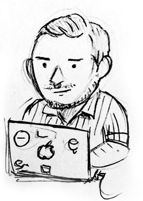

D2iQ component library:
A collaboration between D2iQ's software engineers and designers. Currently focused on improving the way Mesosphere builds dashboard-like UI with high information density.
You can call me a designer or you can call me a developer - just don't restrain me to either box. I'm most excited by collaborating with people and organizations doing work on social justice, healthcare, education, and the arts.
A collaboration between D2iQ's software engineers and designers. Currently focused on improving the way Mesosphere builds dashboard-like UI with high information density.
A central place for Meetup’s designers and engineers to get information about the design system.
React components that are reused across Meetup’s web apps.
A library for styling web apps at Meetup. It provides styles in CSS and utilities for SASS.
iOS, Android, and Web distributions for Meetup's design tokens.